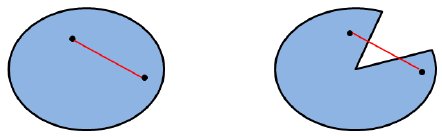
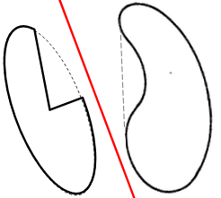
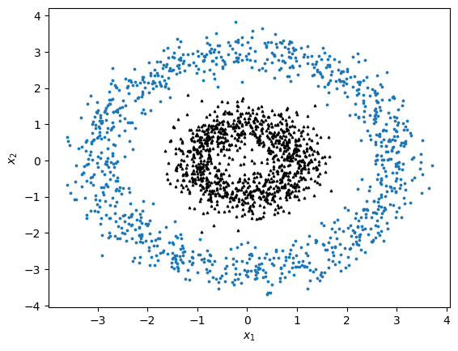
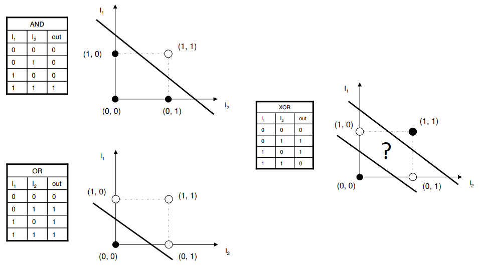
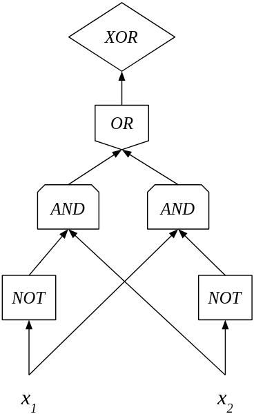

Se dice que el perceptrón, en tanto un modelo lineal, puede solucionar sólo aquellos problemas que son linealmente separables. El concepto de linealmente separable se utiliza principalmente en problemas de clasificación y es de gran importancia dentro de los modelos lineales y del aprendizaje profundo. De forma intuitiva, un problema de clasificación binaria es linealmente separable si existe una función lineal que puede asignar las clases correctamente. Esta definición, sin embargo, parece circular, pues podemos decir que una función lineal puede clasificar correctamente un problema si este último es linealmente separable.
Para dar una definición formal de la separabilidad lineal y poder determinar cuándo un modelo lineal como el perceptrón puede resolver correctamente un problema, primero introduciremos algunos conceptos relevantes: el primero de ellos, el concepto de un conjunto convexo.
Definición 1.2 (Conjunto convexo). Un conjunto es convexo si para todo se cumple que: con .
La ecuación , con define una línea en con extremos y , por lo que podemos decir que un conjunto convexo es aquel en donde para todos dos puntos del conjunto, la línea que va de uno a otro punto sólo contiene puntos que son también parte del conjunto. En la Figura 1.5 se puede ver de manera gráfica el contraste entre un conjunto convexo (a la izquierda) y un conjunto no convexo (a la derecha), en donde se puede ver que si se traza una línea entre los dos puntos elegidos, parte de esta línea queda fuera del conjunto.

A partir del concepto de conjunto convexo podemos definir el envolvente convexo, que nos será de gran ayuda para determinar cuando es posible que el perceptrón encuentre una solución.
Definición 1.3 (Envolvente convexo). Sea un conjunto. El envolvente convexo de es el conjunto definido como:
En otras palabras, el envolvente convexo de un conjunto es el conjunto convexo más pequeño que contiene a . Claramente, si un conjunto es convexo, entonces . En la Figura 1.5 el envolvente convexo del conjunto a la derecha es justamente el conjunto a la izquierda; es decir, su envolvente convexo es el conjunto que incluye a todos los puntos de las líneas que antes no estaban en ese conjunto.
Con el concepto de envolvente convexo podemos comenzar a elucidar cuándo existe un perceptrón que sea capaz de solucionar un problema de clasificación. En primer lugar, debemos recordar la conjetura de la variedad (Sección [sec:ManifolConj]), que nos dice que los datos pertenecen a un conjunto cerrado y acotado (una variedad). Por tanto, si bien los datos de entrenamiento son una muestra finita de esta variedad, podemos asumir que el conjunto al que pertenecen es infinito e incluso continuo. Por tanto, podemos pensar que los datos pertenecen o no a conjuntos convexo o con envolventes convexas.
Teorema 1.2. Sea un conjunto de datos de un problema de clasificación, tal que y son los conjuntos de cada una de las clases. Entonces, existe un perceptrón con pesos que puede clasificar correctamente los datos si y sólo si se cumple que:
Proof. En primer lugar, supongamos que existe un perceptrón con pesos que clasifica correctamente los datos . Sean los puntos de pertenecientes a la clase 0 y los de de la clase 1. Realizamos la demostración por contradicción. Por tanto, supondremos que , entonces existe un . Debemos notar que para todo , , mientras que si , entonces , ya que el hiperplano separador crea regiones convexas. Sin pérdida de generalidad, podemos suponer que , por lo que , pero como también es parte de , entonces , por lo que , pero esto es una contradicción que proviene de asumir que los conjuntos no son disjuntos.
Ahora, si suponemos que , podemos garantizar que existe un hiperplano que separa a ambos conjuntos. De forma intuitiva, existe una separación entre las envolturas convexas de ambos conjuntos (pues son disjuntas). Podemos elegir el punto medio entre la distancia entre ambos conjuntos para trazar el hiperplano garantizando que los puntos de la clase 0 queden por debajo de éste, mientras que los de la clase 1 queden por encima (la Figura 1.6 da un ejemplo gráfico de esto). Una demostración formal se obtiene como consecuencia del teorema de Hahn-Banach,1 el cual mencionamos en la Sección [sec:UniversalApproximator]. ◻

El Teorema 1.2 da condiciones necesarias y suficientes para que un problema de clasificación binaria sea resuelto por el perceptrón. La Figura 1.6 da un ejemplo de esta separación en . Con base en el resultado expuesto, podemos dar la siguiente definición:
Definición 1.4 (Linealmente separable). Un conjunto de datos de un problema de clasificación binaria es linealmente separable si existe un perceptrón que puede clasificarlo correctamente.
Es decir, es linealmente separable si los envolventes convexos de los conjuntos de sus clases son disjuntos.
Por tanto, podemos encontrar una equivalencia entre conjuntos linealmente separables y conjuntos que un perceptrón puede clasificar. Esta discusión también nos muestra los límites del perceptrón. Por ejemplo, la Figura 1.7 muestra un problema que no es linealmente separable, es decir, que no puede ser resuelto por el perceptrón. En este ejemplo notamos que el envolvente convexo de la clase representada por el anillo superior contiene a la clase que se encuentra en su interior. Si decimos que el conjunto del círculo interior es , notamos que . El tomar al envolvente convexo es de especial importancia, pues en este mismo ejemplo notamos que , pero no podemos encontrar ninguna recta que separe los datos, pues sus envolventes convexos no son disjuntos.

Los modelos neuronales como el de se propusieron con la intención de solucionar problemas lógicos. El perceptrón, de hecho, tiene la capacidad de solucionar los problemas lógicos básicos: And, Or y Not.2 Para solucionar el problema lógico cada una de las proposiciones en los operadores binarios And y Or representa una entrada de un vector . Estos problemas lógicos conforman, entonces, un espacio 2 dimensional (véase Figura 1.8).
Si bien los vectores son binarios, puede pensarse que los datos conforman variedades que separan las regiones del espacio de tal forma que la solución del perceptrón, además, es sensible al ruido. De esta forma, se puede ver que los siguientes pesos solucionan cada uno de los problemas lógicos básicos:
Para el problema $\textsc{And}$, y .
Para el problema $\textsc{Or}$, y .
Para el problema $\textsc{Not}$ en la primera entrada, y .

Sin embargo, como hemos señalado en la sección anterior, el perceptrón tiene limitaciones. Una de los problemas que han representado con mayor claridad las limitaciones del perceptrón es el problema lógico Xor (véase Figura 1.8 derecha). El problema Xor es un contrajemplo que muestra que el perceptrón no es capaz de lidiar con problemas complejos, o no linealmente separables.
Proposición 1.2. El perceptrón no es capaz de realizar una clasificación correcta en el problema Xor.
Proof. El problema Xor asocia vectores en a las salidas de la siguiente forma:
| 0 | 0 | 0 |
| 0 | 1 | 1 |
| 1 | 0 | 1 |
| 1 | 1 | 0 |
En otras palabras, el problema lógico Xor está determinado por una función binaria dada como: Podemos suponer que existe un conjunto de parámetros que es capaz de solucionar el problema Xor. Entonces debe de realizar las asignaciones anteriores en base a la regla de clasificación que hemos establecido para el perceptrón. De las asignaciones a la clase 1, obtenemos las desigualdades:
Como el vector se clasifica en la clase 0, entonces . De estas tres desigualdades podemos obtener: Y restando , es claro que: Pero este quiere decir que el vector es clasificado en la clase 1, lo que contradice la suposición de que los pesos escogidos clasifican correctamente el problema Xor, puesto que en este caso, tendríamos .
De esta contradicción podemos concluir que no existe un conjunto de parámetros del perceptrón que resuelva correctamente el problema Xor; por tanto, el perceptrón no puede solucionar el problema Xor. ◻
Si bien el problema Xor no puede solucionarse por un perceptrón simple, nos puede dar una intuición de cómo resolver este problema. Recordemos que la compuerta Xor es un problema lógico compuesto, el cual puede definirse a partir de compuertas lógicas básicas (And, Or y Nor) de la siguiente forma: $$\textsc{Xor}(x_1, x_2) = \textsc{Or}\Big(\textsc{And}\big(\textsc{Not}(x_1), x_2\big), \textsc{And}\big(x_1, \textsc{Not}(x_2)\big)\Big)$$

También existen otras formas de definir al problema Xor, pero lo importante es que podemos definir este problema a partir de compuertas lógicas básicas. Esta es la base de los circuitos lógicos. Sabiendo que el perceptrón puede solucionar estos problemas lógicos. Podemos entonces pensar que aplicar de forma consecutiva el perceptrón para problemas lógicos básicos específicos, podemos obtener una función compuesta de perceptrones que compute el problema Xor. En la Figura 1.9 se muestra de forma gráfica esta propuesta: cada nodo que es representado por una compuerta lógica debe pensarse como un perceptrón particular. Esta idea, como veremos en el Capítulo [chap:Feedforward], se puede extender para resolver problemas no linealmente separables. En este caso, tendremos que desarrollar un método para poder aprender los pesos de cada uno de estos perceptrones en conjunto.